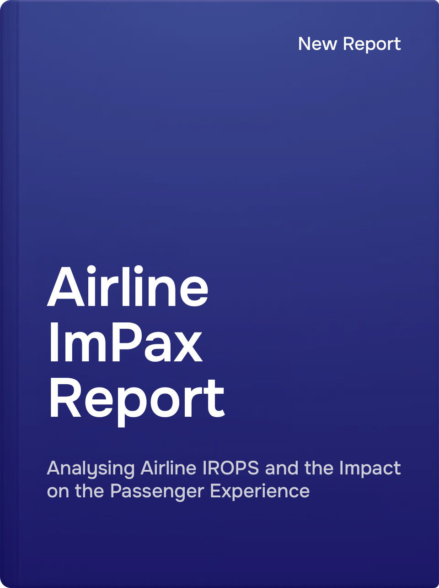

“The methodology of the Airline ImPax Report is sound and the data comprehensive. Delays are organised using logical segmentation, which humanises the scope of the disruption data, making it highly useful and actionable for the aviation industry.”
Henry Harteveldt, President, Atmosphere Research GroupLatest: October 2026
This month's report analyses the disruption data of 295 airlines totalling 660,533 disrupted flights, across 3,001,137 planned flights, globally.
Global flight volumes remained steady month-on-month in October, with the world’s ten largest carriers accounting for 30% of all flights and disrupted passengers. Geopolitical instability continued to affect Middle Eastern operations, while Storms Austen and Boelo disrupted major European hubs. In Asia-Pacific, Typhoon Champi forced widespread cancellations across Taiwan and neighbouring markets, while North American operations faced further disruption from severe thunderstorms. Latin America continued to experience operational pressures, with infrastructure constraints and adverse conditions affecting regional networks. Across all five regions, October highlighted the concentration of passenger disruption among the largest carriers and the continued vulnerability of global aviation to external events.
View Report for October 2026